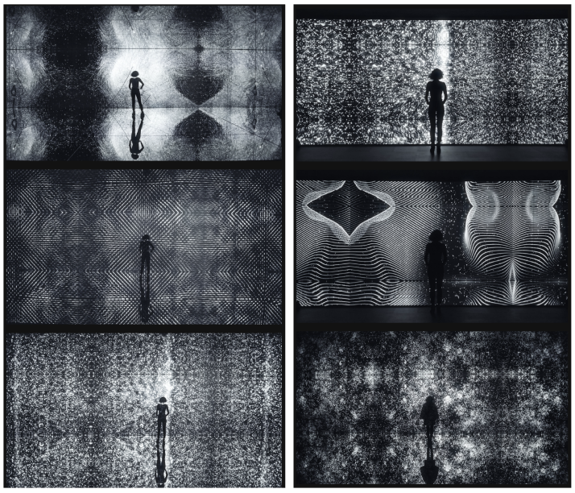
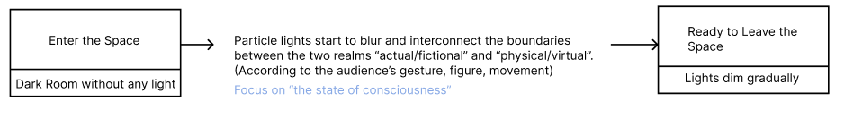

PROJECT 1 Kludging as a Creative Approach to Technology - DOCUMENTATION
01 Reference project - Data Universe

Goal
To question the relativity of perception and how it informs the apprehension of our surrounding. To see itself as “ a means of return” rather than “escape”, facilitating a temporary release from our habitual perceptions and culturally baised assumptons.
Diagram of process

An immersant’s awareness of physical self is transformed by being surrounded in an engrossing environment; often artificial, creating a perception of presence in a non-physical world.
Challenge
Try to use “Processing” to imitate the effect of “particle lights”, which blur and interconnect (Put focus on visualization)=Particle Systems in P5js / Multiple Particle Systems.